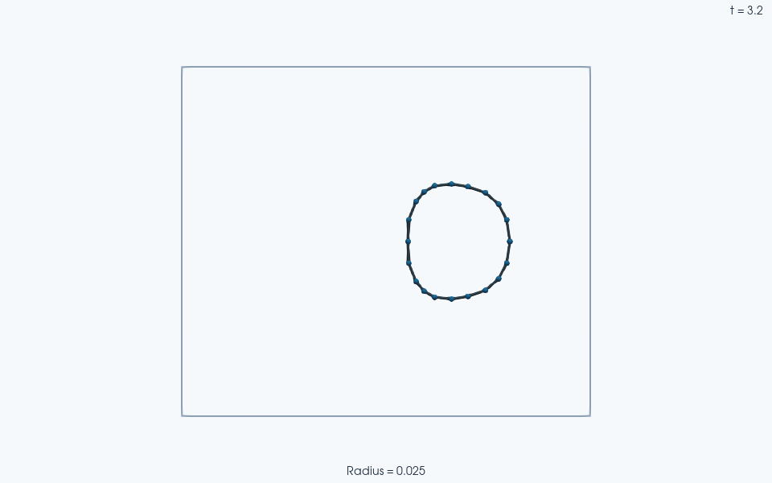

Note
Go to the end to download the full example code.
Deformable Particles#
This guide covers the DeformableParticleModel,
a bonded-force model that turns a collection of point particles (vertices) into
elastic, deformable bodies.
A deformable particle is defined by its mesh: a set of vertices connected by elements (triangles in 3D, segments in 2D). The model computes elastic forces from the mesh geometry. It penalizes deviations in element measure (area/length), body content (volume/area), bending angle, edge length, and surface tension.
This guide shows how to create, configure, and extend deformable particles.
The coefficients correspond to specific terms in the elastic energy, not interchangeable numerical weights. Let \(\mathcal{M}_m\) be element measure, \(\mathcal{C}_I\) enclosed body content, \(L_e\) edge length, and \(\theta_a\) the signed bend between adjacent elements. A subscript 0 denotes the reference geometry. The model uses
In 2D, element measure is segment length and body content is enclosed area;
in 3D they are triangle area and enclosed volume. The constructor derives
the geometric bending weight \(w_b\) from the reference mesh, and
wrap takes the shortest signed angular difference. Nodal forces are
\(\mathbf{F}_i=-\partial E/\partial\mathbf{x}_i\), with all active
terms contributing to the same force accumulator.
The measure, content, edge, and bending terms vanish at their reference values. Surface tension is different: a positive \(\gamma\) favors shorter perimeter or smaller surface area even at the reference geometry. Thus a reference mesh need not be an equilibrium shape when tension is active. The batched restoring-force example below sets it to zero to isolate the response to a prescribed small stretch.
Creating a Deformable Particle#
Create a deformable particle with
BondedForceModel.create. Pass the
registered name "deformable_particle_model" and the mesh topology.
Vertices define particle positions, and elements define connectivity.
If you do not provide reference (stress-free) quantities,
Create()
computes them from vertices. If you provide all required reference
quantities, the vertices argument is optional.
The connectivity arrays of the deformable particle contain
the particles’ array indices from
State.
For the simulation to run correctly, all vertices the deformable model
references must exist in the simulation state.
Content elasticity additionally requires closed, consistently oriented
boundaries: counterclockwise segments in 2D and outward-facing triangles
in 3D. Open meshes can still use edge, measure, and bending terms.
import jax
import jax.numpy as jnp
import numpy as np
import jaxdem as jdem
# A simple square boundary in 2D: 4 vertices connected by 4 segments.
vertices_2d = jnp.array([[0.0, 0.0], [1.0, 0.0], [1.0, 1.0], [0.0, 1.0]], dtype=float)
elements_2d = jnp.array([[0, 1], [1, 2], [2, 3], [3, 0]], dtype=int)
edges_2d = elements_2d # In 2D the edges often coincide with elements.
adjacency_2d = jnp.array([[0, 1], [1, 2], [2, 3], [3, 0]], dtype=int)
dp = jdem.BondedForceModel.create(
"deformable_particle_model",
vertices=vertices_2d,
elements=elements_2d,
edges=edges_2d,
element_adjacency=adjacency_2d,
em=1.0,
eb=0.5,
el=0.3,
gamma=0.1,
)
print("Created DP:", type(dp).__name__)
Created DP: DeformableParticleModel
Passing the Model to the System#
There are two equivalent ways to attach a deformable particle model to a
System.
When you provide a bonded-force model,
create() automatically registers its force
and energy functions with the
ForceManager. The force manager
then computes the bonded forces alongside any other forces (contact,
gravity, custom) during each time step. You do not pass them manually to
the force manager.
Option 1 — pass the model object directly:
state = jdem.State.create(pos=vertices_2d, rad=jnp.full(4, 0.1))
system = jdem.System.create(state.shape, bonded_force_model=dp)
Option 2 — pass the registered type name and keyword arguments.
create() will build the model internally:
system = jdem.System.create(
state.shape,
bonded_force_model_type="deformable_particle_model",
bonded_force_model_kw={
"vertices": vertices_2d,
"elements": elements_2d,
"edges": edges_2d,
"element_adjacency": adjacency_2d,
"em": 1.0,
"eb": 0.5,
"el": 0.3,
"gamma": 0.1,
},
)
If you pass both, the model object takes precedence and
create() ignores the keyword arguments.
A bonded model does not automatically disable contact forces. Node radii
here are smaller than half the edge length, so the reference square has no
self-contact. Use bond_id explicitly when connected nodes should be
excluded from contact even after deformation; see Connectivity Masking.
Coefficient Broadcasting#
Pass every coefficient as a scalar or as a full array. The constructor broadcasts scalar values to the shape of the corresponding geometric entity:
Coefficient |
Target shape |
Description |
|---|---|---|
|
Measure (area/length) stiffness |
|
|
Surface/line tension |
|
|
Bending stiffness |
|
|
Edge length stiffness |
|
|
Content (volume/area) stiffness |
ec
is special: it is a per-body coefficient, not per-element.
The elements_id
array maps each element to its parent body, so the
model knows which ec
value to read for each element’s content
contribution.
When only one body is present and you do not provide
elements_id,
ec
must have shape (1,).
dp_scalar = jdem.BondedForceModel.create(
"deformable_particle_model",
vertices=vertices_2d,
elements=elements_2d,
edges=edges_2d,
em=2.0, # broadcast to shape (4,)
el=0.3, # broadcast to shape (4,)
gamma=0.1, # broadcast to shape (4,)
)
print("em shape:", dp_scalar.em.shape) # (4,)
print("el shape:", dp_scalar.el.shape) # (4,)
print("gamma shape:", dp_scalar.gamma.shape) # (4,)
em shape: (4,)
el shape: (4,)
gamma shape: (4,)
Lazy Array Creation#
The constructor only allocates the arrays it needs.
If a coefficient is None (i.e. not provided), the constructor does
not store the corresponding topology and reference arrays, even if you
passed them. This keeps the model small when only some energy terms are
active.
dp_edges_only = jdem.BondedForceModel.create(
"deformable_particle_model",
vertices=vertices_2d,
elements=elements_2d,
edges=edges_2d,
element_adjacency=adjacency_2d,
el=0.3, # Only edge springs are active.
)
print("elements stored?", dp_edges_only.elements is not None) # False
print("edges stored?", dp_edges_only.edges is not None) # True
print("adjacency stored?", dp_edges_only.element_adjacency is not None) # False
elements stored? False
edges stored? True
adjacency stored? False
Here the constructor discards
elements
and element_adjacency,
because no coefficient that needs them
(em,
ec,
gamma,
eb)
was provided.
2D vs 3D Differences#
JaxDEM supports both 2D and 3D deformable particles. The key differences are:
Concept |
2D |
3D |
|---|---|---|
Elements |
Segments |
Triangles |
Measure |
Segment length |
Triangle area |
Content |
Enclosed area |
Enclosed volume |
Bending |
Angle at shared vertex |
Dihedral angle at shared edge |
Not needed (automatically inferred) |
Optional |
The constructor infers the dimension from the vertices.
vertices.shape[-1] sets whether the model operates in 2D or 3D, and
this must be consistent with elements.shape[-1].
In 3D, each adjacency pair shares an edge (two vertices), and
element_adjacency_edges
stores those vertex IDs. If you do not
provide them, the constructor infers them from the element connectivity.
In 2D, adjacencies share a single vertex and the edges array is not needed.
# A minimal 3D example: a tetrahedron with 4 triangular faces.
vertices_3d = jnp.array(
[[0.0, 0.0, 0.0], [1.0, 0.0, 0.0], [0.5, 1.0, 0.0], [0.5, 0.5, 1.0]],
dtype=float,
)
elements_3d = jnp.array(
[[0, 2, 1], [0, 1, 3], [1, 2, 3], [0, 3, 2]],
dtype=int,
)
adjacency_3d = jnp.array(
[[0, 1], [0, 2], [0, 3], [1, 2], [1, 3], [2, 3]],
dtype=int,
)
dp_3d = jdem.BondedForceModel.create(
"deformable_particle_model",
vertices=vertices_3d,
elements=elements_3d,
element_adjacency=adjacency_3d,
em=1.0,
eb=0.5,
)
print("3D elements shape:", dp_3d.elements.shape) # (4, 3)
print("3D adjacency_edges shape:", dp_3d.element_adjacency_edges.shape) # (6, 2)
3D elements shape: (4, 3)
3D adjacency_edges shape: (6, 2)
The Body-ID Field#
When a single deformable particle model contains multiple bodies, the
elements_id
array identifies which body each element belongs to.
The content energy term
(ec)
requires this mapping, because it is a
per-body quantity: the model sums the partial content contribution of
each element per body using
elements_id.
elements_id
has shape (M,) and contains integer body indices.
For example, two closed square boundaries each have four segments:
elements_id = jnp.array([0, 0, 0, 0, 1, 1, 1, 1])
ec = jnp.array([0.5, 0.8]) # one value per body
Without elements_id,
the model treats all elements as one body (body 0), and
ec
must have shape (1,).
two_square_vertices = jnp.concatenate(
(vertices_2d, vertices_2d + jnp.array([2.0, 0.0]))
)
two_square_elements = jnp.concatenate((elements_2d, elements_2d + 4))
dp_two_bodies = jdem.BondedForceModel.create(
"deformable_particle_model",
vertices=two_square_vertices,
elements=two_square_elements,
elements_id=jnp.repeat(jnp.arange(2), 4),
ec=jnp.array([0.5, 0.8]),
)
print("ec shape:", dp_two_bodies.ec.shape) # (2,)
print("elements_id:", dp_two_bodies.elements_id)
np.testing.assert_allclose(dp_two_bodies.initial_body_contents, [1.0, 1.0])
ec shape: (2,)
elements_id: [0 0 0 0 1 1 1 1]
Connectivity Masking#
Contact forces should skip sphere pairs (or deformable-particle vertices) connected by a bond, because the bonded force model already handles their interaction.
The bond_id field in the
State filters contacts. For each sphere,
bond_id stores the unique IDs of the spheres it connects to.
Connected sphere pairs do not collide.
You can specify connections for each sphere as lists of neighbor unique IDs.
The constructor automatically symmetrizes these connections and pads the
resulting array with -1.
For example, if we have 3 spheres in a line where 0-1 and 1-2 are connected:
state = jdem.State.create(
pos=jnp.array([[0.0, 0.0], [1.0, 0.0], [2.0, 0.0]]),
rad=jnp.array([1.1, 1.1, 1.1]),
bond_id=[[1], [0, 2], [1]], # uneven lists of connected unique IDs
)
print("Constructed bond_id:\n", state.bond_id)
Constructed bond_id:
[[ 1 -1]
[ 0 2]
[ 1 -1]]
If a sphere has no connections, you can pass None (or empty lists), which pads everything with -1:
state_no_bonds = jdem.State.create(
pos=jnp.array([[0.0, 0.0], [1.0, 0.0], [2.0, 0.0]]),
rad=jnp.array([1.1, 1.1, 1.1]),
bond_id=None,
)
print("No bonds bond_id:\n", state_no_bonds.bond_id)
No bonds bond_id:
[[-1]
[-1]
[-1]]
Adding and Merging Deformable Particles#
Just like State, deformable particle models
support add()
and merge()
operations for building up complex
configurations from smaller pieces.
add()
creates a new body from raw arrays and merges it into an existing model.
It is equivalent to calling
Create()
followed by merge().
dp_base = jdem.BondedForceModel.create(
"deformable_particle_model",
vertices=vertices_2d,
elements=elements_2d,
edges=edges_2d,
em=1.0,
el=0.3,
)
# Add a second body.
new_verts = vertices_2d + jnp.array([2.0, 0.0])
dp_extended = dp_base.add(
dp_base,
vertices=new_verts,
elements=elements_2d,
edges=edges_2d,
em=2.0,
el=0.5,
)
print("Elements after add:", dp_extended.elements.shape) # (8, 2)
print("Edges after add:", dp_extended.edges.shape) # (8, 2)
Elements after add: (8, 2)
Edges after add: (8, 2)
merge()
concatenates two existing models. It shifts vertex indices and body IDs so
that references stay consistent. It updates
elements_id
to distinguish the bodies and
element_adjacency
to address the concatenated elements.
When one side has a term and the other does not,
merge()
pads missing
coefficients with 0 and missing reference values with 1.
dp_a = jdem.BondedForceModel.create(
"deformable_particle_model",
vertices=vertices_2d,
elements=elements_2d,
em=1.0,
gamma=0.1,
)
dp_b = jdem.BondedForceModel.create(
"deformable_particle_model",
vertices=vertices_2d,
elements=elements_2d,
edges=edges_2d,
el=0.5,
)
dp_merged = dp_a.merge(dp_a, dp_b)
print("Merged em:", dp_merged.em) # em padded with 0 for dp_b's elements
print("Merged el:", dp_merged.el) # el padded with 0 for dp_a's edges
Merged em: [1. 1. 1. 1.]
Merged el: [0.5 0.5 0.5 0.5]
Batched Simulations#
Deformable particles work with
jax.vmap, so you can run
many independent simulations in parallel. Each simulation gets its own
State and System
(including its own bonded model). The model uses
the original square as its reference while each state starts with a small
horizontal stretch. Surface tension is off so the reference is stress-free.
def create_sim(i: jax.Array) -> tuple[jdem.State, jdem.System]:
stretch = 1.0 + 0.02 * (i + 1)
state = jdem.State.create(
pos=vertices_2d * jnp.array([stretch, 1.0]), rad=jnp.full(4, 0.1)
)
dp_model = jdem.BondedForceModel.create(
"deformable_particle_model",
vertices=vertices_2d,
elements=elements_2d,
edges=edges_2d,
element_adjacency=adjacency_2d,
em=[1.0],
eb=[0.5],
el=0.3,
gamma=None,
)
system = jdem.System.create(state.shape, bonded_force_model=dp_model)
return jdem.System.initialize(state, system)
# Build a batch of three independent simulations.
states, systems = jax.vmap(create_sim)(jnp.arange(3))
print("Batched pos shape (B, N, dim):", states.pos.shape)
# The stretched right-hand vertices feel restoring forces to the left.
assert bool(jnp.all(states.force[:, 1, 0] < 0))
initial_widths = states.pos[:, 1, 0] - states.pos[:, 0, 0]
# Advance all simulations by ten steps in parallel.
states, systems = systems.step(states, systems, n=10)
widths = states.pos[:, 1, 0] - states.pos[:, 0, 0]
assert bool(jnp.all(widths < initial_widths))
print("Initial widths:", initial_widths)
print("Widths after elastic response:", widths)
print("After stepping:", states.pos.shape)
Batched pos shape (B, N, dim): (3, 4, 2)
Initial widths: [1.02 1.04 1.06]
Widths after elastic response: [1.01993503 1.03987007 1.0598051 ]
After stepping: (3, 4, 2)
A Note on Edges#
The edges
array and the el
coefficient define spring connections between vertex pairs. These are fully independent from the
elements
connectivity: you can define edge springs that do not correspond to any
mesh element. This lets you model springs outside the mesh geometry, such
as cross-bracing springs or tethers between non-adjacent vertices.
Because edges are independent, use them alone (without elements) or in combination with any other energy term.
dp_extra_springs = jdem.BondedForceModel.create(
"deformable_particle_model",
vertices=vertices_2d,
edges=jnp.array([[0, 2], [1, 3]]), # Diagonal springs (not mesh edges).
el=0.5,
)
print("Diagonal springs — edges:", dp_extra_springs.edges)
print("Diagonal springs — elements stored?", dp_extra_springs.elements is not None)
Diagonal springs — edges: [[0 2]
[1 3]]
Diagonal springs — elements stored? False
VTK Output#
The VTKWriter detects when a
DeformableParticleModel
is attached to the system and writes additional VTK files:
deformable_elements — the mesh elements (triangles/segments) with per-cell data:
elements_id,ec,gamma,initial_element_measures,current_element_measures,partial_content, andelement_normals.deformable_edges — the edge springs with per-cell data:
initial_edge_lengths,current_edge_lengths, andel.deformable_edge_adjacencies — the adjacency pairs (hinge edges in 3D, hinge vertices in 2D) with per-cell data:
initial_bendings,current_bendings, andeb.
The writer only writes the files whose energy terms are active.
For example, if
el
is None, it skips the edges writer.
You can load this output in ParaView for visualization and debugging.
A deformable particle bouncing from a wall#
Give a small, stress-free 20-vertex polygon a uniform velocity toward the right wall. Its vertices run counterclockwise around the closed boundary. Its leading vertices reflect first while the trailing vertices are still moving right, compressing the body. The elastic terms then redistribute momentum and restore its shape during the rebound.
ReflectSphereDomain provides a
rectangular box whose walls reflect the spherical vertices at their
physical radii. This is nodal wall contact: the connecting segments do not
have an independent wall-contact law. Neighboring vertices are bonded so
their pairwise contact interactions are masked; the deformable model
supplies the internal forces.
wall_num_vertices = 20
wall_angles = jnp.linspace(0.0, 2 * jnp.pi, wall_num_vertices, endpoint=False)
wall_vertices = jnp.array([1.2, 1.5]) + 0.45 * jnp.stack(
(jnp.cos(wall_angles), jnp.sin(wall_angles)), axis=-1
)
wall_indices = jnp.arange(wall_num_vertices)
wall_next = (wall_indices + 1) % wall_num_vertices
# Segment i joins vertex i to i+1; consecutive segments share a bending hinge.
# Modulo indexing closes both the boundary and its final-to-first hinge.
wall_elements = jnp.stack((wall_indices, wall_next), axis=-1)
wall_adjacency = jnp.stack((wall_indices, wall_next), axis=-1)
wall_bonds = jnp.stack(((wall_indices - 1) % wall_num_vertices, wall_next), axis=-1)
# Keep total mass equal to one as the boundary resolution increases. The nodal
# radius is small relative to the initial segment length (about 0.141).
wall_node_radius = 0.025
wall_state = jdem.State.create(
pos=wall_vertices,
vel=jnp.tile(jnp.array([1.2, 0.0]), (wall_num_vertices, 1)),
rad=jnp.full(wall_num_vertices, wall_node_radius),
mass=jnp.full(wall_num_vertices, 1.0 / wall_num_vertices),
bond_id=wall_bonds,
)
wall_model = jdem.BondedForceModel.create(
"deformable_particle_model",
vertices=wall_vertices,
elements=wall_elements,
edges=wall_elements,
element_adjacency=wall_adjacency,
em=1.5,
ec=3.0,
el=1.5,
eb=0.1,
gamma=None,
)
wall_system = jdem.System.create(
state=wall_state,
dt=0.002,
rotation_integrator_type=None,
collider_type="naive",
domain_type="reflectsphere",
domain_kw={"box_size": jnp.array([3.5, 3.0]), "restitution_coefficient": 1.0},
bonded_force_model=wall_model,
)
wall_state, wall_system = jdem.System.initialize(wall_state, wall_system)
wall_state, wall_system, (scene_states, scene_systems) = jdem.System.trajectory_rollout(
wall_state, wall_system, strides=jnp.asarray([0] + [40] * 40)
)
wall_positions = np.asarray(scene_states.pos)
wall_widths = wall_positions[:, :, 0].max(axis=1) - wall_positions[:, :, 0].min(axis=1)
wall_com_velocities = np.asarray(scene_states.vel).mean(axis=1)
assert wall_positions.shape == (41, wall_num_vertices, 2)
assert np.isfinite(wall_positions).all()
np.testing.assert_allclose(wall_state.mass.sum(), 1.0, atol=1e-6)
# The oriented polygon must retain positive enclosed area during impact.
wall_following = np.roll(wall_positions, -1, axis=1)
wall_areas = 0.5 * np.sum(
wall_positions[:, :, 0] * wall_following[:, :, 1]
- wall_positions[:, :, 1] * wall_following[:, :, 0],
axis=1,
)
assert np.all(wall_areas > 0)
assert wall_widths.min() < 0.9 * wall_widths[0]
assert wall_com_velocities[:, 0].min() < -0.2
assert np.all(wall_positions >= wall_node_radius - 1e-5)
assert np.all(wall_positions <= np.array([3.5, 3.0]) - wall_node_radius + 1e-5)
wall_system.check_overflow()
print(
f"Wall-bounce body: {wall_num_vertices} vertices, total mass {wall_state.mass.sum():.3f}"
)
print(f"Width during impact: {wall_widths[0]:.3f} -> {wall_widths.min():.3f}")
print(f"Peak leftward center-of-mass speed: {-wall_com_velocities[:, 0].min():.3f}")

ParaView rendering of this run’s VTKWriter output.
Wall-bounce body: 20 vertices, total mass 1.000
Width during impact: 0.900 -> 0.471
Peak leftward center-of-mass speed: 0.882
The animation uses these 41 complete state/system snapshots, including the initial condition, over 3.2 time units. ParaView draws the actual vertices and the deformable-element and edge output from the VTK writer. The body remains elastic: the wall reverses nodal momentum while deformation stores energy internally, so the shape can continue oscillating after separation.
Total running time of the script: (0 minutes 26.304 seconds)